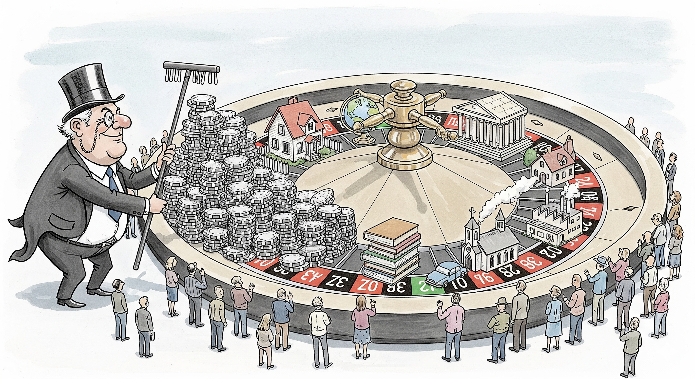

I will be upfront about my bias from the start. My instinct, when I hear prediction markets, is skepticism. Not the reflexive kind where I dismiss them immediately, but the nagging feeling that something is off. The more I looked into how they actually work, the more that feeling hardened into a considered view. These platforms, in their current form, likely cause more harm than good for our social fabric.
However, I have lived long enough to know that instincts can sometimes be wrong. To write a fair assessment, we have to look at the parts I might be missing. If you disagree with my conclusion, I want you to understand exactly how I arrived there.
What a Prediction Market Actually Is
At its simplest, a prediction market is a place where people trade contracts tied to real-world outcomes. These aren't just sports bets; they cover everything from elections and interest rate hikes to scientific breakthroughs and global conflicts.
A contract pays out one dollar if an event happens and zero dollars if it does not. The price of that contract at any given moment represents the market's collective guess at the probability. If a "Yes" share for a candidate winning an election costs 65 cents, the market is telling you there is a 65% chance they win.
The two major players right now are Polymarket and Kalshi. These platforms argue they are the world's most accurate "truth machines." The theory is that when people put real money on their beliefs, they research harder, lie less, and provide a clearer signal than any pundit or pollster ever could.
The Maths of the "House"
To understand why these markets can be a losing game for the average person, we have to look at the mechanics of how the money moves. Unlike a traditional bookmaker who sets the odds, these platforms often use an Automated Market Maker, or AMM.
The math behind many of these systems follows a constant product formula:
In this equation, $x$ represents the number of "Yes" shares and $y$ represents the number of "No" shares. As more people buy "Yes," the supply of "Yes" shares in the pool decreases, which forces the price up to keep the value of $k$ constant.
While this seems fair, the "House" still exists. It hides in the overround and the spread. In a perfect world, the price of a "Yes" share and a "No" share would add up to exactly 100%. In reality, they often add up to 103% or 105%. That extra percentage is guaranteed profit for the liquidity providers and the platform.
Furthermore, there is the math of Expected Value. For a casual trader, the formula is:
Because of the fees and the "sharks"... professional traders using high-speed algorithms, the average person's expected value is almost always negative. Over time, the money flows from the many to the few. It is a casino dressed up as a laboratory.
The Theory of Reflexivity: When Bets Change Reality
The market did not "predict" the future; it manufactured it.
The most significant danger of these markets is a concept called $reflexivity$. This is my main issue with the entire industry.
In a normal market, if I bet that the price of gold will go down, my bet does not actually create more gold in the ground. But in human affairs, the bet itself can change the outcome. This is similar to the observer effect in physics, where the act of watching a particle changes how it behaves.
Imagine a prediction market gives a CEO a 90% chance of being fired. The board of directors sees this "probability" on the news. Shareholders start calling for a change because they think the market knows something they don't. Employees start looking for new jobs. Eventually, the board fires the CEO simply because the market said it was inevitable. This creates a dangerous feedback loop where wealthy bettors can move the needle on reality by placing a large enough bet to shift public perception of what is "probable."
The Counter-Argument: Skin in the Game
To be fair, there is a reason people defend these platforms. They solve the problem of "cheap talk." In our current media landscape, experts make bold claims every day with zero consequences for being wrong.
A useful example occurred during a New York City mayoral race. Billionaire Bill Ackman was vocal on social media, claiming that Andrew Cuomo still had a strong path to victory despite what the numbers were saying. In a world of just Twitter, that would just be another billionaire's opinion. However, the prediction market community pushed back, challenging him to put his money where his mouth was. If he truly believed Cuomo had a high chance of winning, he could buy the "Yes" shares trading for pennies.
Ackman's refusal to engage provided a truth signal. It proved that even a billionaire couldn't move the consensus if the underlying facts didn't support him. In that case, the market was a filter for empty rhetoric.
The Vulnerabilities: Manipulation and Oracles
Even if we accept the "truth signal" argument, these platforms are easy to abuse. Three methods stand out.
Wash Trading. A wealthy person can buy and sell shares to themselves to create the illusion of high activity and a high probability. This can trick news organisations into reporting a "shift in momentum" that doesn't exist.
The Oracle Problem. These markets rely on an "Oracle" to decide who won the bet — usually a news feed or government website. If a hacker or corrupt official can manipulate that data source for even a few minutes, they can trigger a payout worth millions before anyone notices.
The Whale Effect. In markets with low liquidity, a single person with enough capital can act as the "narrative driver." If a market only has $50,000 in it, someone with $100,000 can make the probability of an event look like 99% or 1% at will. They aren't predicting; they are painting a picture for the public to see.
Conclusion: A Net-Negative for the Social Fabric
While prediction markets are mathematically elegant and can occasionally silence loud pundits, they are ultimately a net-negative for society. They encourage us to view our shared reality through the lens of a gambling app.
When we turn the most sensitive parts of our lives; our elections, our conflicts, our health into a casino, we stop being active citizens and start being passive spectators. We stop asking why things are happening and start asking what the odds are.
By allowing reflexivity to distort our world and letting wealthy actors "buy" the probability of an event, we risk losing our grip on objective truth. A "truth machine" that can be manipulated by the highest bidder is not a machine worth building. When reality becomes a betting slip, we all lose.